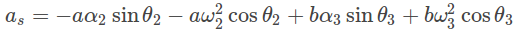

Theory
Acceleration Analysis

Differentiating the earlier equations from velocity analysis, we end up with the acceleration data of the slider crank. With the prior knowledge of the angular acceleration of the crank,α2 the parameters such as the linear acceleration of the slider, 𝔞s, and the angular acceleration of the coupler, α3



Procedure
- Edit parameters in variables section to see the change in position diagram
- For crank and connecting rod the method of drawing acceleration vectors is same as in case of links in four bar mechanism.
- For slider the acceleration is parallel to the slider axis

Self Evaluation

Simulation

Assignment
- What is the acceleration v/s time graph of the slider in slider crank mechanism?

Quiz

Videos

References
-
Robert L Norton (2011), Design of Machinery (5th Ed.), McGraw Hill Publication
Uicker J.J., Pennock G.R. and Shigley J.E. (2009), Theory of Machines and Mechanisms (3rd Ed.), Oxford University Press
S S Rattan (2014), Theory of Machines (4th Ed.), McGraw Hill Education (India) Private Limited